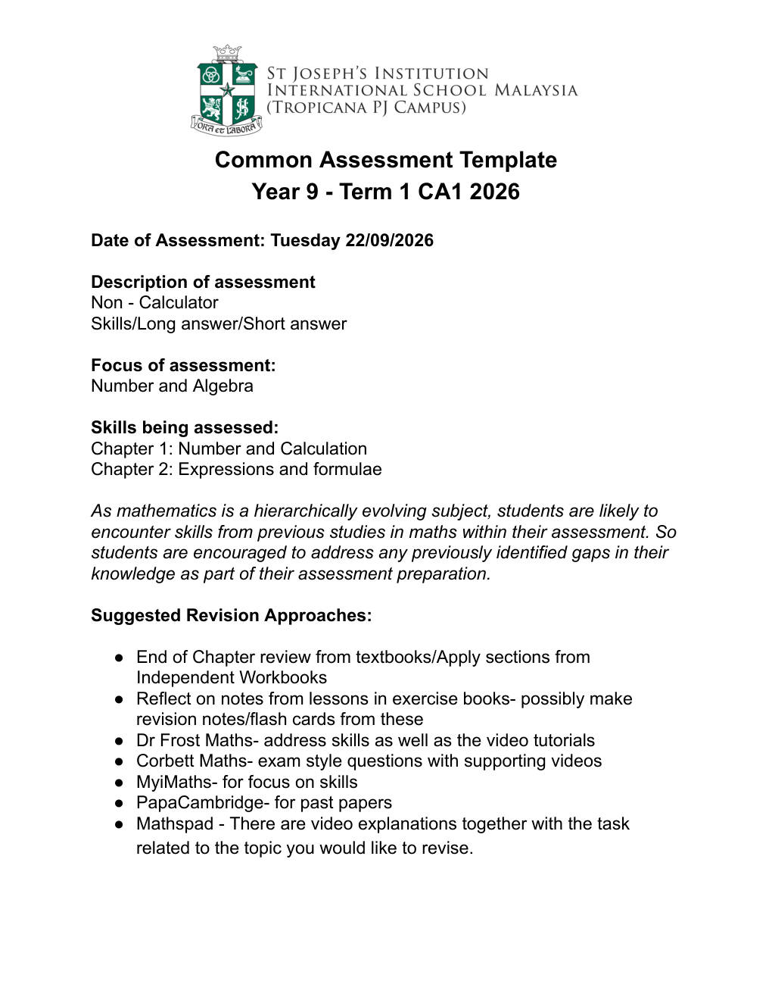

Ananthan Seluerajah 선생님이 8월 18일에 올린 안내 글이다. 내용은 짧다. 수업에서 쓰는 OneNote(원노트) 노트북 주소를 여기서 확인하라는 것이다.
OneNote는 마이크로소프트의 디지털 필기 프로그램이다. 선생님이 수업 시간에 쓴 판서·예제·필기가 이 노트북 한 곳에 모인다. 글에 붙은 1drv.ms 주소는 마이크로소프트 원드라이브(OneDrive) 공유 링크로, 그 노트북을 여는 통로다.
이 게시글 자체에는 수학 내용이 들어 있지 않다. 실제 SJI Year 9 Math 학습 자료는 링크를 눌러 들어간 노트북 안에 있다. 그래서 이 글은 '자료가 어디 있는지 알려주는 표지판'이라고 보면 된다.
선생님(Ananthan Seluerajah)이 8월 26일에 올린 안내 글이다. 수학 공부 사이트인 Dr Frost Maths에 들어와서 이 반(class)에 가입하라는 내용이다.
가입하는 방법은 글에 적힌 초대 링크(invite link)를 누르는 것 하나다. 주소는 https://www.drfrost.org/invite/WXS5H5이고, 뒤에 붙은 WXS5H5가 이 반을 가리키는 초대 코드(invite code)다.
이 링크로 들어가야 선생님이 내주는 과제를 받을 수 있는 반에 소속된다. 즉 수학 내용을 공부하는 자료가 아니라, 공부할 곳에 등록(join)하라는 준비 단계의 글이다.
시험 날짜는 2026년 9월 22일 화요일이고, 계산기를 쓸 수 없는(Non-Calculator) 시험이다. 문제 형태는 세 가지가 섞여 나온다. 스킬 문제(skills), 긴 서술형 답(long answer), 짧은 답(short answer)이다.
시험 범위의 큰 주제는 수와 대수(Number and Algebra)다. 구체적으로는 교과서 1단원 수와 계산(Number and Calculation), 2단원 식과 공식(Expressions and formulae) 두 단원이다.
안내문은 수학이 계단처럼 쌓이는 과목(hierarchically evolving subject)이라 이번 시험에도 예전에 배운 내용이 섞여 나올 수 있다고 말한다. 그래서 전에 잘 몰랐던 부분이 있으면 이번 준비 기간에 같이 메우라고 권한다.
추천하는 복습 방법도 적혀 있다. 교과서 단원 끝 복습문제와 워크북의 Apply 부분 풀기, 수업 공책을 다시 보며 복습 노트나 단어카드 만들기다. 온라인으로는 Dr Frost Maths(스킬+영상 강의), Corbett Maths(시험형 문제+영상), MyiMaths(스킬 연습), PapaCambridge(기출문제), Mathspad(주제별 영상 설명+과제)를 쓰라고 한다.

시험은 2026년 9월 22일 화요일에 보고, 계산기를 쓸 수 없다.
범위는 수와 대수 - 1단원 수와 계산, 2단원 식과 공식이며, 이전 학년에서 배운 내용도 나올 수 있다.
복습 사이트는 Dr Frost Maths, Corbett Maths, MyiMaths, PapaCambridge, Mathspad 다섯 곳이 추천된다.
Multiplication is done before addition and subtraction, so 3 × (−4) = −12 (1 mark). The expression becomes −5 + (−12) − (−6) = −5 − 12 + 6, and subtracting a negative is the same as adding, so −(−6) = +6 (1 mark). Working left to right gives −17 + 6 = −11 (1 mark). Final answer: −11.
84 = 2² × 3 × 7 and 360 = 2³ × 3² × 5, obtained by repeated division by primes or a factor tree (1 mark each product). For the HCF take the lowest power of each common prime: 2² × 3 = 12 (1 mark). For the LCM take the highest power of every prime that appears: 2³ × 3² × 5 × 7 = 8 × 9 × 35 = 2520 (1 mark).
Change both to improper fractions: 2¾ = 11/4 and 1½ = 3/2 (1 mark). Dividing by a fraction is the same as multiplying by its reciprocal, because 3/2 × 2/3 = 1, so 11/4 ÷ 3/2 = 11/4 × 2/3 = 22/12 (1 mark). Cancelling by 2 gives 11/6 = 1⅚ (1 mark).
Divide the number parts: 12 ÷ 3 = 4 (1 mark). For the letters use the division law aᵐ ÷ aⁿ = aᵐ⁻ⁿ, so a⁵ ÷ a² = a³ and b³ ÷ b¹ = b² (1 mark for stating/using the law correctly). The fully simplified answer is 4a³b² (1 mark).
Rounding to 1 significant figure gives 40 × 6 ÷ 0.5 (1 mark). This is 240 ÷ 0.5 = 480 (1 mark). Because 39.7 was rounded up to 40 and 0.48 was rounded up to 0.5 (dividing by a larger number makes the result smaller), the two effects work in opposite directions; a correct comment with a reason earns the final mark — for example, the estimate 480 is slightly smaller than the exact value (1 mark).
Like terms are terms that contain exactly the same letter (variable) raised to the same power, so 5x and −8x are like terms, and −3y and +7y are like terms, while the number 2 stands alone (1 mark). Collecting them: 5x − 8x = −3x and −3y + 7y = 4y, giving −3x + 4y + 2 (1 mark).
Expanding the first bracket: 3(2x − 5) = 6x − 15 (1 mark). Expanding the second bracket, remembering that −2 multiplies both terms: −2(4x − 1) = −8x + 2 (1 mark). Collecting like terms gives 6x − 8x = −2x and −15 + 2 = −13, so the answer is −2x − 13 (1 mark).
The highest common factor of 12 and 18 is 6, and both terms contain at least one x and one y, so the common factor is 6xy (1 mark). Taking it outside the bracket gives 6xy(2x − 3y) (1 mark). It is complete because 2x and 3y have no remaining common numerical or algebraic factor, and expanding 6xy(2x − 3y) returns the original expression (1 mark).
Substituting C = −25 gives F = 9 × (−25) ÷ 5 + 32 (1 mark). Working out the fraction part first: 9 × (−25) = −225 and −225 ÷ 5 = −45 (1 mark). Then −45 + 32 = −13, so F = −13 degrees Fahrenheit (1 mark).
Subtract u from both sides to get v − u = at (1 mark), then divide both sides by t to obtain a = (v − u)/t (1 mark). Substituting gives a = (26 − 2)/4 (1 mark), so a = 24/4 = 6 (1 mark). The same inverse operation must be applied to both sides at every step.